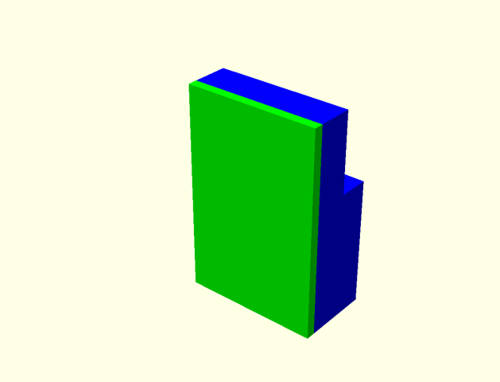

Motion visualization of Luggable PC version 1.
Motion visualization of a dual-screen Luggable PC variant using two identical screens.
Trying to visualize the triple-screen concept described by Arnold Garcia.
Unable to find videos of the Razer Valerie concept actually deploying/stowing its screens, here's my best guess based on text descriptions found online.
A variant on the triple-screen design based around rotational hinges deploying much like tools from a swiss army knife.
A variant on the triple-screen design inspired by the USS Enteprise briefing rooms in Star Trek (original series.)